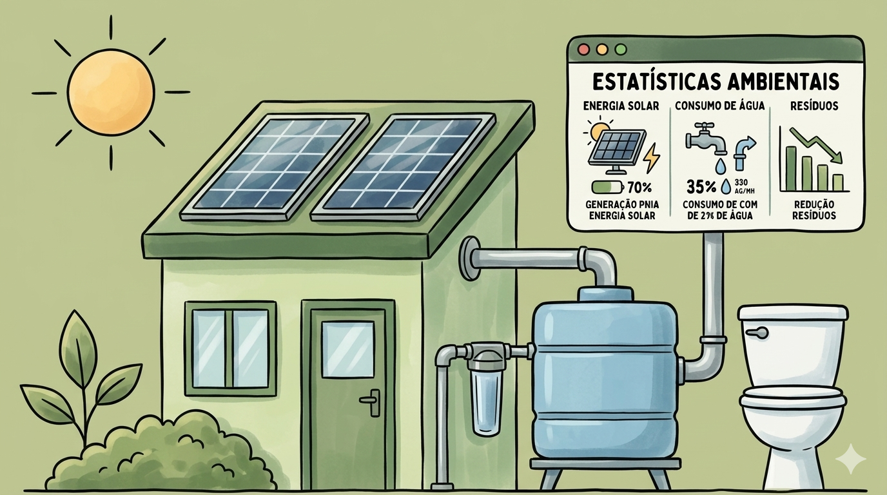
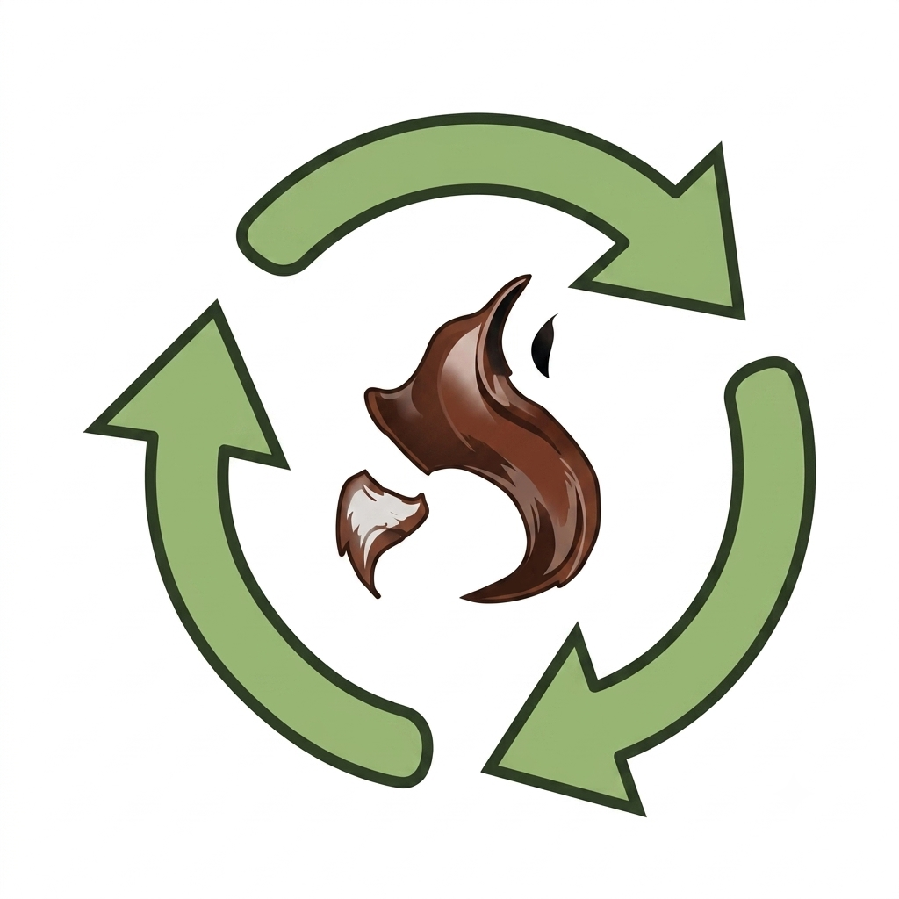
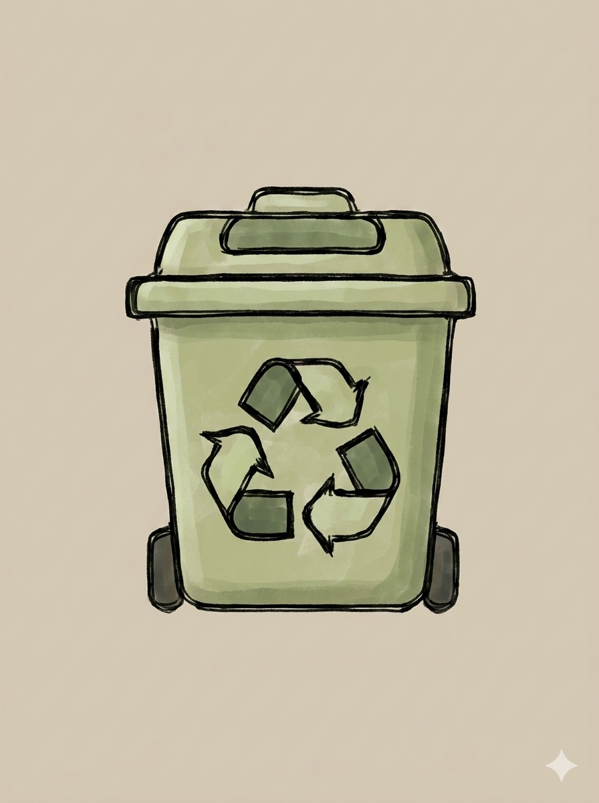
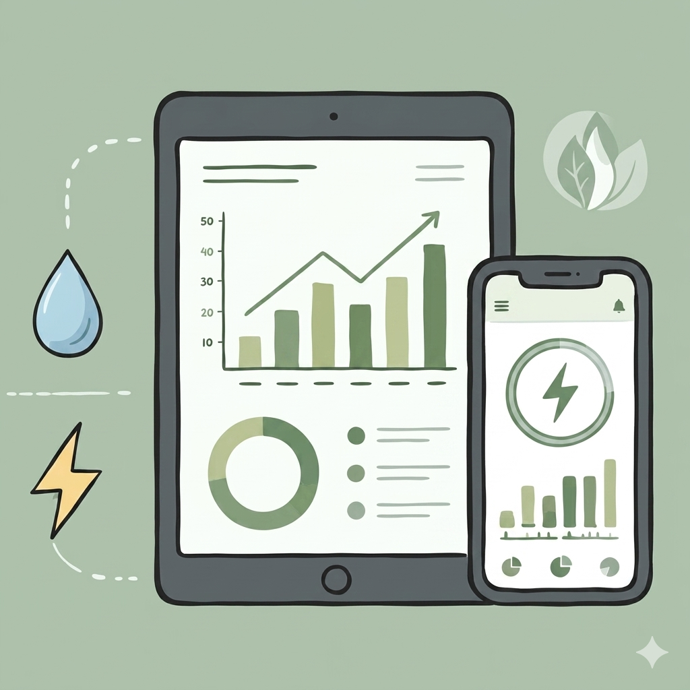
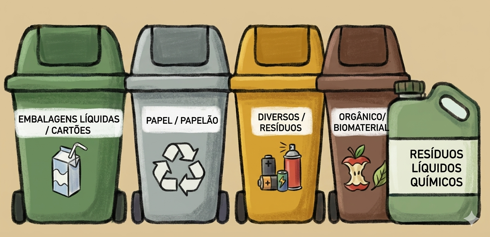
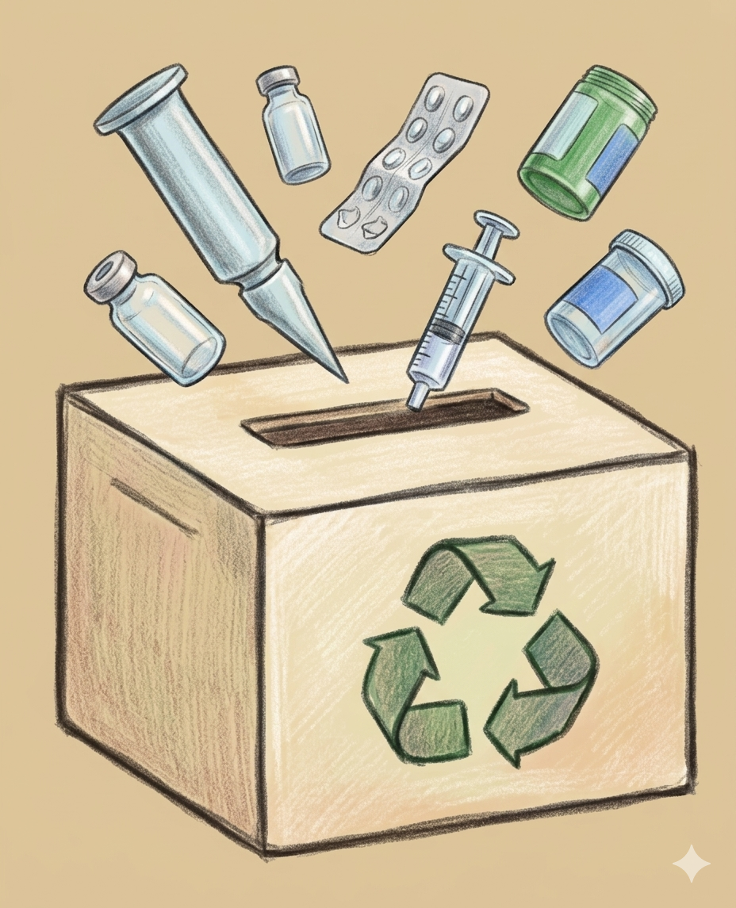
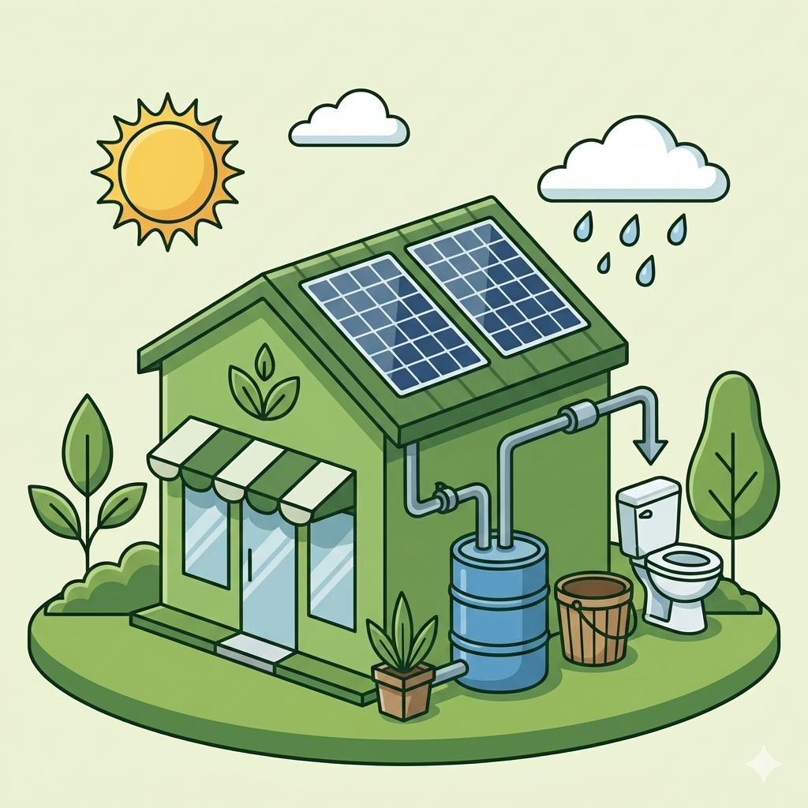
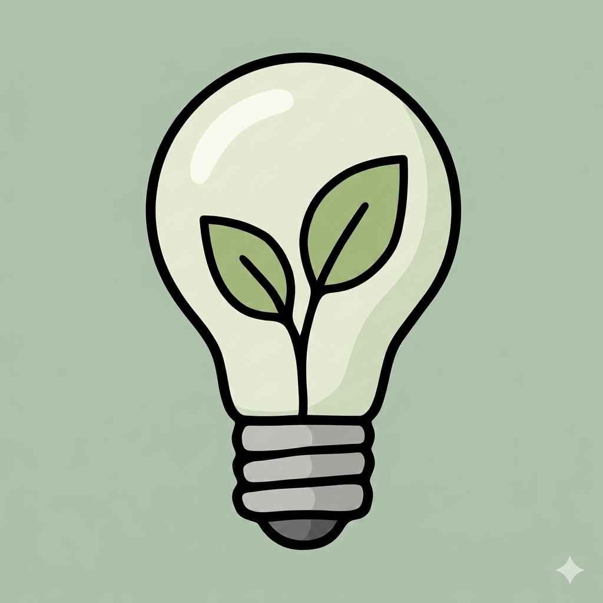

Sustentabilidade Ambiental
Adote práticas ecológicas, otimize recursos e reduza custos operacionais enquanto protege o meio ambiente em seu salão ou barbearia.
Painel de Estatísticas Ambientais
Métricas reais projetadas ao implementar a ecoeficiência e as melhores práticas sustentáveis.

Reciclagem de Cabelos
Cabelo cortado vira fertilizante rico em nitrogênio ou mantas absorventes para contenção de óleo em desastres ambientais.


Gestão Sem Papel
Agendamentos, cadastros e comprovantes digitais eliminam o desperdício de papel e modernizam seu salão.

Coleta & Químicos
Lixeiras de coleta seletiva e recipientes adequados impedem que sobras químicas poluam rios e solos locais.


Consumo Inteligente
Economia de água com arejadores e captação de chuva, aliada a lâmpadas LED e energia solar distribuída.

